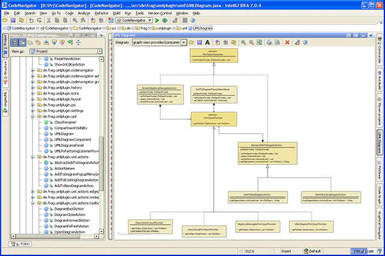
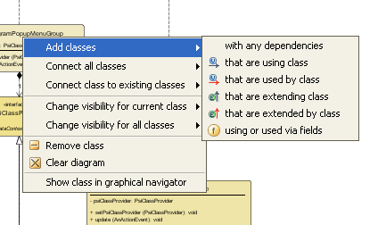

Code Navigator
Understanding other people's code or your own code in
complex systems is a challenging problem in software development. This
plugin supports developers in learning the dependencies and couplings
in object oriented systems.
Three major plugin-functions can be used:
- class cloud diagram
- graphical navigation between dependent classes
- creation of UML diagrams
The class cloud diagram should be used as a first step when trying
to understand an object oriented system. It shows all project classes
in a single diagram as a cloud, very similar to tag clouds known from
web-applications. Some of the most important classes can such be found
by using the class cloud to be further investigated by using the
graphical navigator or the source code.
Graphical navigation can be used to find and understand all
dependencies (using classes, used classes, extending classes and
extended classes of some subject class).
As soon as the developer has understood which classes interact in
which way, UML diagrams should be created that condense this knowledge.
Though it is really helpful to have at least some UML diagrams, many
software systems are not documented well or the existing diagrams are
totally outdated. This plugin helps to create static class diagrams that
always can be kept in sync with the current state of a system.
Class Cloud
While tag clouds are well known in web applications to show the tags
that were most often attached to images, videos or links, the class
cloud highlights classes that have many dependencies to other
classes in an object oriented system. To open the class cloud diagram,
choose
Analyze Class Cloud from the
Analyze-menu in the
main menu bar.
After selecting the menu item, all project classes will be analzed to find their
dependencies. This process can take some time. Small projects will be analyzed in
a couple of seconds while huge projects may need up to a few minutes. A progress bar will
be displayed during the analyzation process:
As soon as all dependencies are analyzed, a new tool window will be opened. This
tool window will show the class cloud and a tool bar.
The class cloud shows all classes of the current project in a single diagram. The
class color and font size depends on several attributes:
| View attribute |
Description |
|
Color
|
This color is used for classes that use other classes, but are not used by
other classes. These classes will be shown at the left border of the class cloud.
Additionally this color is used for classes that are used by other classes, but do
not use other classes themselves. These classes will be shown at the right border
of the class cloud.
|
|
Color
|
This color is used for classes that extend other classes, but are not extended by
other classes. These classes will be shown at the bottom border of the class cloud.
Additionally this color is used for classes that are extended by other classes, but do
not extend other classes themselves. These classes will be shown at the top border
of the class cloud.
|
|
Color
|
This color is used for classes without any special meaning.
|
|
Other colors
|
Classes that share two of the attributes that will lead to a special color will
be shown as a mixture of the colors described above.
|
|
Font-size
|
The more dependencies from and to other classes, the bigger is the classes' font.
|
All these styles and the position of each class can be used to find candidates for
manual investigation starting points. After opening a project that contains several thousand
classes, if you do not know all the classes and their relationships, it is very difficult to
find reasonable classes that should be read first. All classes that have many
dependencies to other classes are probably important, so these classes are highlighted by
using a big font and you can choose one of these classes very quickly. You can jump directly
to the source code or you can first open the big classes in the graphical navigator
to further explore the dependencies before jumping to the source code.
Classes that are used by other classes, but do not use other classes themselves are utility
classes in many cases, so these classes are candidates for a detailed look, too. These classes
can be found near the right border of the class cloud and they are colored in blue (this is
the standard color, which can be changed). Classes that use other classes, but are not used
by other classses can be found near the left border of the class cloud and are colored in blue,
too. These classes are often action classes, main classes or some other type of start
classes and are thus candidates for further investigation in order to understand the complete
system.
Classes that are extended by other classes, but do not extend other classes themselves are base
classes in many cases, so these classes are candidates for a detailed look, too. These classes
can be found near the top border of the class cloud and they are colored in orange (this is
the standard color, which can be changed). Classes that extend other classes, but are not extended
by other classses can be found near the bottom border of the class cloud and are colored in orage,
too. These classes are often specialized classes and are thus candidates for further investigation
in order to understand the complete system.
The mouse wheel can be used to zoom into the diagram and dragging the mouse with pressed right
mouse button pans the view. There is a simple popup menu that appears on a right click on any
class in the class cloud:
| Item |
Description |
| Show class in graphical navigator |
Opens graphical navigator tool window with selected class as subject class.
|
| Show class in editor |
Shows source of selected class in text editor.
|
| Show dependencies |
Highlights dependencies between selected class and all other classes.
|
| Refresh Class Cloud |
Refreshed the class cloud by analyzing all project classes. This can be used to show
changes that affected onw or more classes.
|
Choosing the menu item Show dependencies should show a diagram like this:
The class cloud diagram tool bar contains several components and buttons:
| Item |
Keyboard Shortcut |
Description |
|
|
|
Here you can enter any case sensitive string and all classes with a qualified class
name that contains this string will be highlighted while all other classes will be
ghosted (see image below for an example).
|
|
|
|
This button refreshes the class cloud be reanalyzing all classes.
|
|
|
|
This is a toggle button with two states: in the selected state, a click on a
class in the class cloud will jump to the source of that class. In the unselected
state, a click on a class in the class cloud will highlight the class and all
other classes in the diagram that are dependent to this class or that this class
is dependent to.
|
|
|
|
This will reset the highlighted classes so there are no longer any ghosted classes.
|
|
|
CTRL +
|
Zoom in
|
|
|
CTRL -
|
Zoom out
|
|
|
CTRL F
|
Fit diagram to view
|

|
|
Exports the diagram to an image (JPG, PNG or GIF).
|
|
|
|
Print diagram
|
|
|
|
Show print preview
|
|
|
|
Close diagram and dispose all contents
|
|
|
|
Open plugin settings
|
|
|
|
Show this help
|
If a user highlighted classes by name using the text field, the diagram should look like this:
Graphical Navigator
The major feature of this plugin is graphical navigation between
dependent classes. A new tool window (
Graphical Navigator)
can be opened by selecting menu item
Show in Graphical Navigator
in one of the context sensitive menus after right clicking a class
in the class tree of the project view or right clicking on any symbol
in a Java editor. Alternatively
ctrl-shift-G can be used
while the cursor is somewhere on a symbol in a Java editor to open the
tool window.

The code navigator shows the subject class and all
dependent classes in a graph that uses UML-notation to display the
classes and their dependencies. The central node is the subject node,
all classes that use the central class are shown at the left, all classes
that are used by the central class are shown at the right, all classes
that extend the subject class are shown at the bottom and classes that are
extended by the subject class are shown at the top of the graph. The mouse
wheel can be used for zooming the graph. Dragging the mouse with pressed
right mouse button moves the view port.
There are several actions available in the grapical navigator tool window:
-
a click on the central class node opens the
corresponding class in a Java editor
-
a click on any other class node navigates to the
corresponding class within the graphical navigator
-
a click on an edge that points to the central class
node opens the class associated with the edge source node in a Java editor and
points the cursor to the usage position.
-
a click on an edge that points from the central class
to some other node opens the class associated with the edge target node in a
Java editor and points the cursor to the class definition.
-
a shift click on an edge that points from the central class to some other node opens the
class associated with the subject node in a Java editor and points the cursor to the usage position.
The toolbar at the top of the graphical navigation window provides several functions:
| Item |
Keyboard Shortcut |
Description |
|
|
CTRL LEFT
|
Step back in navigation history
|
|
|
CTRL RIGHT
|
Step forward in navigation history
|
|
|
CTRL +
|
Zoom in
|
|
|
CTRL -
|
Zoom out
|
|
|
CTRL F
|
Fit diagram to view
|
|
|
|
Export diagram to image (GIF, JPEG or PNG)
|
|
|
|
Print diagram
|
|
|
|
Show print preview
|
|
|
|
Open graphical navigator settings
|
|
|
|
Show plugin help
|
A right click on a class in the graph shows a popup menu that contains the same menu items as
a popup menu that is described in the UML diagrams section below.
UML Diagrams
Another major feature of this plugin is creation of static UML class
diagrams. A new tool window (
UML Diagrams) can be opened by selecting
menu item
Add to UML Diagram in one of the context sensitive
menus after right clicking a class in the class tree of the project
view or right clicking on any symbol in a Java editor. Without any existing
diagram, there is only one sub menu item:
New Diagram.
By selecting this menu item, a name for a new diagram is requested and
the diagram tool window is opened.

The diagram will contain the class that was just added. After this first step, a
new sub menu item will appear below the
New Diagram item, that can be used
to add further classes to the existing diagram. Although you can use this menu item
over and over again to add more classes to a diagram, this is not the preferred way to
create a diagram. There are two problems that must be solved:
-
all important dependencies between classes in a
diagram should be part of the diagram as associations that connect the
classes.
-
it should be as easy as possible to keep a diagram in sync
with the code
These two problems are solved by adding further classes and
associations to a diagram in special way. A right click on a class in a
diagram shows a popup menu.

| Item |
Description |
| Add classes | with any dependencies |
adds all classes of the project and the corresponding
associations to this diagram, that are dependent to the selected subject class or that the subject
class is dependent to
|
| Add classes | that are using class |
does the same as first menu item of this group but restricts
the added classes to classes that use the selected subject class
|
| Add classes | that are used by class |
does the same as first menu item of this group but restricts the
added classes to classes that are used by the selected subject class
|
| Add classes | that are extending class |
does the same as first menu item of this group but
restricts the added classes to classes that extend the selected subject class
|
| Add classes | that are extended by class |
does the same as first menu item of this group but restricts
the added classes to classes that are extended by the selected subject class
|
| Add classes | using or used via fields |
does the same as first menu item of this group but restricts
the added classes to classes that use ore are used by subject class via fields
|
| Connect all classes | with any dependencies |
adds all known associations between all classes that are
already contained in the diagram
|
| Connect all classes | that use each other |
does the same as first menu item of this group but restricts
the added classes to classes that use each other
|
| Connect all classes | that extend each other |
does the same as first menu item of this group but restricts
the added classes to classes that extend each other
|
| Connect all classes | using or used via fields |
does the same as first menu item of this group but restricts
the added classes to classes that use each other via fields
|
| Connect class to existing classes | with any dependencies |
adds all known associations between the current
class and all classes that are already contained in the diagram
|
| Connect class to existing classes | that are using class |
does the same as first menu item of this group
but restricts the added associations to classes are using the current class
|
| Connect class to existing classes | that are used by class |
does the same as first menu item of this group
but restricts the added associations to classes are used by the current class
|
| Connect class to existing classes | that are extending class |
does the same as first menu item of this group
but restricts the added associations to classes are extending the current class
|
| Connect class to existing classes | that are extended by class |
does the same as first menu item of this
group but restricts the added associations to classes are extended by the current class
|
| Connect class to existing classes | using or used via fields |
does the same as first menu item of this group
but restricts the added associations to classes are using or are used by the current class via fields
|
| Change visibility for current class | Toggle Fields |
Toggles visibility of field compartment for current class
|
| Change visibility for current class | Toggle Methods |
Toggles visibility of method compartment for current class
|
| Change visibility for current class | Toggle Fields and Methods |
Toggles visibility of field and method compartments for current class
|
| Change visibility for current class | Hide Fields and Methods |
Hides field and method compartments for current class
|
| Change visibility for all classes | Toggle Fields |
Toggles visibility of field compartment for all classes
|
| Change visibility for all classes | Toggle Methods |
Toggles visibility of method compartment for all classes
|
| Change visibility for all classes | Toggle Fields and Methods |
Toggles visibility of field and method compartments for all classes
|
| Change visibility for all classes | Hide Fields and Methods |
Hides field and method compartments for all classes
|
| Remove class |
Removes the selected class and all related associations from the diagram. There is one difference
to most of the other commands: no new layout is computed. This way it is much easier to remove
several classes from the diagram without searching for connected classes over and over. To compute
a new layout, just press the Refresh-button in the tool bar.
|
| Clear diagram |
Removes all classes and all associations from the diagram
|
| Show class in graphical navigator |
Rhows the selected class in the Graphical Navigator tool window.
|
These menu items (except
Show class in graphical navigator and the items that affect the compartment
visibility) do not only change the current diagram, but also add a step to a list of creation steps.
When the
IDEA project is closed, it is not the diagram that is saved in the
IDEA project file,
but this list of creation steps. There are several consequences of this way to create UML diagrams.
First and most important, the diagram can be recreated at any time to
keep the diagram and the code in sync. The recreated diagram will
include all changes, so added classes or associations will be
part of the recreated diagram. Classes that were removed will be also
removed from the diagram. Renamed or moved classes or classes contained
in packages that were renamed or moved will show the new name in the diagram,
so all refactorings to classes and packages and even undo operations to these
refactorings will always be kept in sync with all UML diagrams.
Another consequence is the fact, that manual changes to the diagram
make almost no sense. If the user had changed the position of some
class within the diagram or had layouted some edges by hand, these
changes would be lost after diagram recreation, so manual changes to a
diagram are not supported. Whether a diagram looks nice or not, is therefore
completely dependent on the algorithm that computes the diagram layout.
Fortunately, the layout algorithm of the yfiles library that
is used by IDEA, is really sophisticated and produces acceptable
diagrams in almost all cases.
The toolbar at the top of the UML diagram window provides several functions:
| Item |
Keyboard Shortcut |
Description |

|
|
Combobox for selecting current diagram
|
|
|
|
Open saved diagram(s)
|
|
|
|
Save one or all diagrams to diagram XML file or save current diagram as JPG, GIF or PNG image or
as SVG vector graphics file (to be opened with tools like
InkScape) or as graphml graph file (to be opened with tools like
yed).
|
|
|
|
Rename current diagram
|
|
|
CTRL LEFT
|
Navigate back in diagram creation command list
|
|
|
CTRL RIGHT
|
Navigate forward in diagram creation command list
|
|
|
CTRL R
|
Refresh diagram by executing all diagram creation steps
|
|
|
|
Edit diagram creation steps (see dialog below)
|
|
|
CTRL +
|
Zoom in
|
|
|
CTRL -
|
Zoom out
|
|
|
CTRL F
|
Fit diagram to view
|
|
|
|
Print diagram
|
|
|
|
Show print preview
|
|
|
|
Close diagram and dispose all contents
|
|
|
|
Open UML diagram settings
|
|
|
|
Show plugin help
|
The following picture shows the dialog for editing diagram creation steps:
Diagram creation steps can be rearranged by selecting one or more steps and moving steps with the up-
or down-button. Steps can be deleted by selecting one or more steps and pressing the delete-button.
If only one step is selected, the crop-button can be used to delete all steps below the selected step.
As long as the preview-checkbox is selected, all manipulations will be immedialtely visible in the diagram.
All diagrams will be saved to the IDEA project file when closing the current project and will be reloaded
as soon as the project is loaded.
Settings
An additional settings dialog is reachable from the IDEA settings and from all new tool windows.
The colors of class nodes, abstract class nodes, interface nodes and enum
nodes can be adjusted as well as colors for normal, used, and extended classes
in class clouds. The minimum and maximum font size for class clouds can be selected.
The transition animation between two graphs can be switched on and off.
If the animation is enabled, the duration in milliseconds can be configured.
All (generic) interfaces and classes that should be handled as collections
(to detect one-to-many-associations) can be included in a list of collection classes.
The grid size used for UML diagram layout can be adjusted, too.
Highlighting cyclic dependencies between classes in the graphical navigator can be
switched on and off.